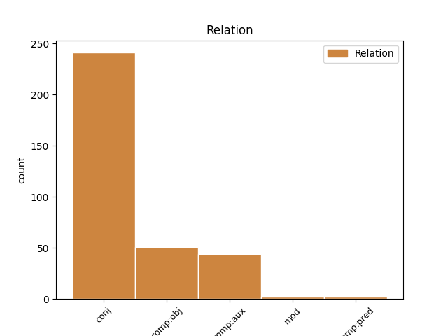
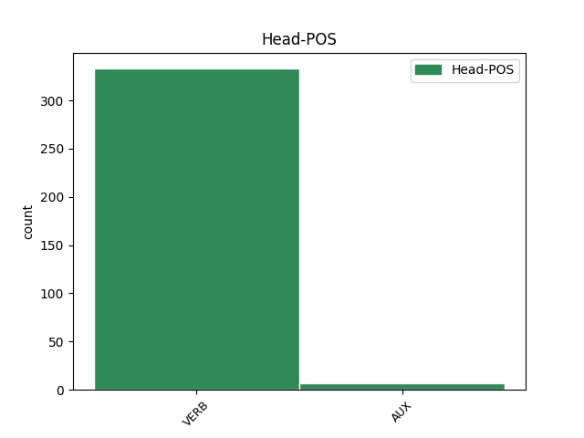
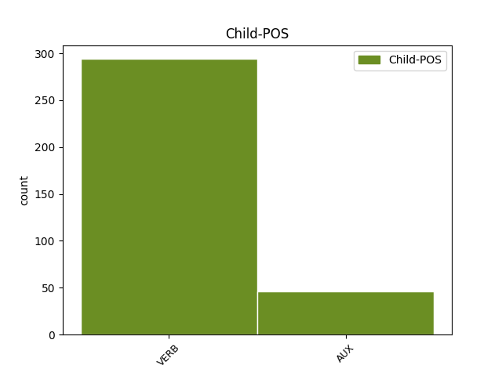

Distribution of features within this leaf



Agreement Rules sorted by frequency.
- When the dependent token is the conjunct(conj) of the head token,
1 از _ _ _ _ 0 _ _ _
2 این _ _ _ _ 0 _ _ _
3 رو _ _ _ _ 0 _ _ _
4 اسلام _ _ _ _ 0 _ _ _
5 در _ _ _ _ 0 _ _ _
6 چنین _ _ _ _ 0 _ _ _
7 مواردی _ _ _ _ 0 _ _ _
8 میفرماید _ _ _ _ 0 _ _ _
9 با _ _ _ _ 0 _ _ _
10 قدرت _ _ _ _ 0 _ _ _
11 قانون _ _ _ _ 0 _ _ _
12 را _ _ _ _ 0 _ _ _
13 اجرا _ _ _ _ 0 _ _ _
14 کنید کرد#کن VERB V_SUB Mood=Sub|Number=Plur|Person=2|Tense=Pres 0 _ _ _
15 و _ _ _ _ 0 _ _ _
16 گرفتار _ _ _ _ 0 _ _ _
17 احساسات _ _ _ _ 0 _ _ _
18 نشوید کرد#کن AUX V_SUB Mood=Sub|Number=Plur|Person=2|Polarity=Neg|Tense=Pres 14 conj _ SpaceAfter=No
19 . _ _ _ _ 0 _ _ _
1 از _ _ _ _ 0 _ _ _
2 جانب _ _ _ _ 0 _ _ _
3 دیگر _ _ _ _ 0 _ _ _
4 ، _ _ _ _ 0 _ _ _
5 دو _ _ _ _ 0 _ _ _
6 جریان _ _ _ _ 0 _ _ _
7 انحراف _ _ _ _ 0 _ _ _
8 و _ _ _ _ 0 _ _ _
9 تحجر _ _ _ _ 0 _ _ _
10 برای _ _ _ _ 0 _ _ _
11 حفظ _ _ _ _ 0 _ _ _
12 و _ _ _ _ 0 _ _ _
13 بقای _ _ _ _ 0 _ _ _
14 خود _ _ _ _ 0 _ _ _
15 نیاز _ _ _ _ 0 _ _ _
16 به _ _ _ _ 0 _ _ _
17 همراه _ _ _ _ 0 _ _ _
18 کردن _ _ _ _ 0 _ _ _
19 دیگران _ _ _ _ 0 _ _ _
20 دارند _ _ _ _ 0 _ _ _
21 و _ _ _ _ 0 _ _ _
22 برای _ _ _ _ 0 _ _ _
23 دستیابی _ _ _ _ 0 _ _ _
24 به _ _ _ _ 0 _ _ _
25 این _ _ _ _ 0 _ _ _
26 منظور _ _ _ _ 0 _ _ _
27 به _ _ _ _ 0 _ _ _
28 درون _ _ _ _ 0 _ _ _
29 جناحهای _ _ _ _ 0 _ _ _
30 سیاسی _ _ _ _ 0 _ _ _
31 درون _ _ _ _ 0 _ _ _
32 نظام _ _ _ _ 0 _ _ _
33 نفوذ _ _ _ _ 0 _ _ _
34 میکنند _ _ _ _ 0 _ _ _
35 و _ _ _ _ 0 _ _ _
36 حتی _ _ _ _ 0 _ _ _
37 اگر _ _ _ _ 0 _ _ _
38 نتوانند توانست#توان AUX V_AUX Mood=Sub|Number=Plur|Person=3|Polarity=Neg|Tense=Pres|VerbForm=Fin 0 _ _ _
39 کلیه _ _ _ _ 0 _ _ _
40 آنها _ _ _ _ 0 _ _ _
41 را _ _ _ _ 0 _ _ _
42 با _ _ _ _ 0 _ _ _
43 خود _ _ _ _ 0 _ _ _
44 همراه _ _ _ _ 0 _ _ _
45 نمایند نمود#نما VERB V_SUB Mood=Sub|Number=Plur|Person=3|Tense=Pres 38 comp:aux _ SpaceAfter=No
46 ، _ _ _ _ 0 _ _ _
47 تلاش _ _ _ _ 0 _ _ _
48 میکنند _ _ _ _ 0 _ _ _
49 تا _ _ _ _ 0 _ _ _
50 با _ _ _ _ 0 _ _ _
51 دو _ _ _ _ 0 _ _ _
52 شیوه _ _ _ _ 0 _ _ _
53 : _ _ _ _ 0 _ _ _
54 با _ _ _ _ 0 _ _ _
55 یارگیری _ _ _ _ 0 _ _ _
56 از _ _ _ _ 0 _ _ _
57 میان _ _ _ _ 0 _ _ _
58 آنها _ _ _ _ 0 _ _ _
59 و _ _ _ _ 0 _ _ _
60 نفوذ _ _ _ _ 0 _ _ _
61 دادن _ _ _ _ 0 _ _ _
62 عناصر _ _ _ _ 0 _ _ _
63 مشکوک _ _ _ _ 0 _ _ _
64 به _ _ _ _ 0 _ _ _
65 درون _ _ _ _ 0 _ _ _
66 شان _ _ _ _ 0 _ _ _
67 ، _ _ _ _ 0 _ _ _
68 جبهه _ _ _ _ 0 _ _ _
69 خود _ _ _ _ 0 _ _ _
70 را _ _ _ _ 0 _ _ _
71 قوت _ _ _ _ 0 _ _ _
72 ببخشند _ _ _ _ 0 _ _ _
73 . _ _ _ _ 0 _ _ _
1 مزید _ _ _ _ 0 _ _ _
2 بر _ _ _ _ 0 _ _ _
3 اینها _ _ _ _ 0 _ _ _
4 ، _ _ _ _ 0 _ _ _
5 چشم _ _ _ _ 0 _ _ _
6 امثال _ _ _ _ 0 _ _ _
7 ما _ _ _ _ 0 _ _ _
8 ، _ _ _ _ 0 _ _ _
9 در _ _ _ _ 0 _ _ _
10 سنین _ _ _ _ 0 _ _ _
11 ۵۷ _ _ _ _ 0 _ _ _
12 سالگی _ _ _ _ 0 _ _ _
13 ، _ _ _ _ 0 _ _ _
14 روزنامهای _ _ _ _ 0 _ _ _
15 میتواند _ _ _ _ 0 _ _ _
16 بخواند خواند#خوان VERB V_SUB Mood=Sub|Number=Sing|Person=3|Tense=Pres 0 _ _ _
17 با _ _ _ _ 0 _ _ _
18 حروف _ _ _ _ 0 _ _ _
19 حبلالمتین _ _ _ _ 0 _ _ _
20 صد _ _ _ _ 0 _ _ _
21 سال _ _ _ _ 0 _ _ _
22 پیش _ _ _ _ 0 _ _ _
23 و _ _ _ _ 0 _ _ _
24 خط _ _ _ _ 0 _ _ _
25 و _ _ _ _ 0 _ _ _
26 خطوط _ _ _ _ 0 _ _ _
27 مجله _ _ _ _ 0 _ _ _
28 مهر _ _ _ _ 0 _ _ _
29 شصت _ _ _ _ 0 _ _ _
30 سال _ _ _ _ 0 _ _ _
31 پیش _ _ _ _ 0 _ _ _
32 و _ _ _ _ 0 _ _ _
33 حال _ _ _ _ 0 _ _ _
34 و _ _ _ _ 0 _ _ _
35 هوای _ _ _ _ 0 _ _ _
36 یغما _ _ _ _ 0 _ _ _
37 و _ _ _ _ 0 _ _ _
38 آینده _ _ _ _ 0 _ _ _
39 چهل _ _ _ _ 0 _ _ _
40 سال _ _ _ _ 0 _ _ _
41 پیش _ _ _ _ 0 _ _ _
42 چاپ _ _ _ _ 0 _ _ _
43 شود کرد#کن AUX V_SUB Mood=Sub|Number=Sing|Person=3|Tense=Pres 16 comp:obj _ _
44 این _ _ _ _ 0 _ _ _
45 اطلاعات _ _ _ _ 0 _ _ _
46 را _ _ _ _ 0 _ _ _
47 که _ _ _ _ 0 _ _ _
48 ما _ _ _ _ 0 _ _ _
49 میخوانیم _ _ _ _ 0 _ _ _
50 به _ _ _ _ 0 _ _ _
51 خاطر _ _ _ _ 0 _ _ _
52 همان _ _ _ _ 0 _ _ _
53 ستون _ _ _ _ 0 _ _ _
54 چهل _ _ _ _ 0 _ _ _
55 سال _ _ _ _ 0 _ _ _
56 قبل _ _ _ _ 0 _ _ _
57 آن _ _ _ _ 0 _ _ _
58 است _ _ _ _ 0 _ _ _
59 که _ _ _ _ 0 _ _ _
60 تجدید _ _ _ _ 0 _ _ _
61 خاطرات _ _ _ _ 0 _ _ _
62 و _ _ _ _ 0 _ _ _
63 نشاط _ _ _ _ 0 _ _ _
64 گذشته _ _ _ _ 0 _ _ _
65 است _ _ _ _ 0 _ _ _
66 . _ _ _ _ 0 _ _ _
1 انتخابات _ _ _ _ 0 _ _ _
2 بکشد کشید#کش VERB V_SUB Mood=Sub|Number=Sing|Person=3|Tense=Pres 9 mod _ _
3 به _ _ _ _ 0 _ _ _
4 میاندورهای _ _ _ _ 0 _ _ _
5 ، _ _ _ _ 0 _ _ _
6 یک _ _ _ _ 0 _ _ _
7 لیستی _ _ _ _ 0 _ _ _
8 نشان _ _ _ _ 0 _ _ _
9 بدهیم _ VERB V_SUB Mood=Sub|Number=Plur|Person=1|Tense=Pres 0 _ _ _
10 که _ _ _ _ 0 _ _ _
11 حظ _ _ _ _ 0 _ _ _
12 کنید _ _ _ _ 0 _ _ _
13 . _ _ _ _ 0 _ _ _
1 پس _ _ _ _ 0 _ _ _
2 در _ _ _ _ 0 _ _ _
3 کار _ _ _ _ 0 _ _ _
4 ترجمه _ _ _ _ 0 _ _ _
5 شعر _ _ _ _ 0 _ _ _
6 کلاسیک _ _ _ _ 0 _ _ _
7 فارسی _ _ _ _ 0 _ _ _
8 ، _ _ _ _ 0 _ _ _
9 تنها _ _ _ _ 0 _ _ _
10 چارهای _ _ _ _ 0 _ _ _
11 که _ _ _ _ 0 _ _ _
12 میماند _ _ _ _ 0 _ _ _
13 این _ _ _ _ 0 _ _ _
14 است _ _ _ _ 0 _ _ _
15 که _ _ _ _ 0 _ _ _
16 شاعر _ _ _ _ 0 _ _ _
17 و _ _ _ _ 0 _ _ _
18 نابغه _ _ _ _ 0 _ _ _
19 ادبی _ _ _ _ 0 _ _ _
20 پرقدرتی _ _ _ _ 0 _ _ _
21 که _ _ _ _ 0 _ _ _
22 فارسی _ _ _ _ 0 _ _ _
23 بداند _ _ _ _ 0 _ _ _
24 و _ _ _ _ 0 _ _ _
25 بفهمد _ _ _ _ 0 _ _ _
26 پیدا _ _ _ _ 0 _ _ _
27 شود _ _ _ _ 0 _ _ _
28 ، _ _ _ _ 0 _ _ _
29 شعری _ _ _ _ 0 _ _ _
30 فارسی _ _ _ _ 0 _ _ _
31 را _ _ _ _ 0 _ _ _
32 بخواند _ _ _ _ 0 _ _ _
33 و _ _ _ _ 0 _ _ _
34 در _ _ _ _ 0 _ _ _
35 سوخت _ _ _ _ 0 _ _ _
36 و _ _ _ _ 0 _ _ _
37 ساز _ _ _ _ 0 _ _ _
38 روح _ _ _ _ 0 _ _ _
39 شاعرانه _ _ _ _ 0 _ _ _
40 خود _ _ _ _ 0 _ _ _
41 هضم _ _ _ _ 0 _ _ _
42 کند کرد#کن VERB V_SUB Mood=Sub|Number=Sing|Person=3|Tense=Pres 61 comp:pred _ _
43 و _ _ _ _ 0 _ _ _
44 در _ _ _ _ 0 _ _ _
45 حالی _ _ _ _ 0 _ _ _
46 که _ _ _ _ 0 _ _ _
47 حامل _ _ _ _ 0 _ _ _
48 آن _ _ _ _ 0 _ _ _
49 تأثیر _ _ _ _ 0 _ _ _
50 و _ _ _ _ 0 _ _ _
51 حامله _ _ _ _ 0 _ _ _
52 از _ _ _ _ 0 _ _ _
53 آن _ _ _ _ 0 _ _ _
54 است _ _ _ _ 0 _ _ _
55 ، _ _ _ _ 0 _ _ _
56 شعر _ _ _ _ 0 _ _ _
57 دیگری _ _ _ _ 0 _ _ _
58 به _ _ _ _ 0 _ _ _
59 زبان _ _ _ _ 0 _ _ _
60 خود _ _ _ _ 0 _ _ _
61 بزاید زایید#زا AUX V_SUB Mood=Sub|Number=Sing|Person=3|Tense=Pres 0 _ _ _
62 . _ _ _ _ 0 _ _ _
Disagree Examples:
1 مادر _ _ _ _ 0 _ _ _
2 : _ _ _ _ 0 _ _ _
3 تو _ _ _ _ 0 _ _ _
4 سایه _ _ _ _ 0 _ _ _
5 برو رفت#رو VERB V_IMP Mood=Imp|Number=Sing|Person=2 0 _ _ _
6 تشنه _ _ _ _ 0 _ _ _
7 ت _ _ _ _ 0 _ _ _
8 نشه _ VERB V_SUB Mood=Sub 5 comp:obj _ SpaceAfter=No
9 . _ _ _ _ 0 _ _ _
1 بیا آمد#آ VERB V_IMP Mood=Imp|Number=Sing|Person=2 0 _ _ _
2 خود _ _ _ _ 0 _ _ _
3 م _ _ _ _ 0 _ _ _
4 کمک _ _ _ _ 0 _ _ _
5 ت _ _ _ _ 0 _ _ _
6 کنم کرد#کن VERB V_SUB Mood=Sub|Number=Sing|Person=1|Tense=Pres 1 comp:obj _ SpaceAfter=No
7 . _ _ _ _ 0 _ _ _
1 پدر _ _ _ _ 0 _ _ _
2 : _ _ _ _ 0 _ _ _
3 [ _ _ _ _ 0 _ _ _
4 با _ _ _ _ 0 _ _ _
5 شنیدن _ _ _ _ 0 _ _ _
6 صدای _ _ _ _ 0 _ _ _
7 رادیو _ _ _ _ 0 _ _ _
8 ] _ _ _ _ 0 _ _ _
9 احمد _ _ _ _ 0 _ _ _
10 جان _ _ _ _ 0 _ _ _
11 ، _ _ _ _ 0 _ _ _
12 تو _ _ _ _ 0 _ _ _
13 گناه _ _ _ _ 0 _ _ _
14 ت _ _ _ _ 0 _ _ _
15 کمتر _ _ _ _ 0 _ _ _
16 ه _ _ _ _ 0 _ _ _
17 بابا _ _ _ _ 0 _ _ _
18 ، _ _ _ _ 0 _ _ _
19 دم _ _ _ _ 0 _ _ _
20 افطاری _ _ _ _ 0 _ _ _
21 دعا _ _ _ _ 0 _ _ _
22 کن کرد#کن VERB V_IMP Mood=Imp|Number=Sing|Person=2 0 _ _ _
23 بندههای _ _ _ _ 0 _ _ _
24 خوبی _ _ _ _ 0 _ _ _
25 باشیم بود#باش AUX V_SUB Mood=Sub|Number=Plur|Person=1|Tense=Pres 22 comp:obj _ SpaceAfter=No
26 . _ _ _ _ 0 _ _ _
1 مادر _ _ _ _ 0 _ _ _
2 : _ _ _ _ 0 _ _ _
3 بمیرم _ VERB V_SUB Mood=Sub|Number=Sing|Person=1|Tense=Pres 0 _ _ _
4 الهی _ _ _ _ 0 _ _ _
5 ، _ _ _ _ 0 _ _ _
6 ببین دید#بین VERB V_IMP Mood=Imp|Number=Sing|Person=2 3 conj _ _
7 صورت _ _ _ _ 0 _ _ _
8 ش _ _ _ _ 0 _ _ _
9 چطور _ _ _ _ 0 _ _ _
10 شده _ _ _ _ 0 _ _ _
11 ، _ _ _ _ 0 _ _ _
12 بچه _ _ _ _ 0 _ _ _
13 م _ _ _ _ 0 _ _ _
14 ! _ _ _ _ 0 _ _ _
1 سعی _ _ _ _ 0 _ _ _
2 کنید _ _ _ _ 0 _ _ _
3 به _ _ _ _ 0 _ _ _
4 عنوان _ _ _ _ 0 _ _ _
5 پایاننامه _ _ _ _ 0 _ _ _
6 به _ _ _ _ 0 _ _ _
7 این _ _ _ _ 0 _ _ _
8 برنامه _ _ _ _ 0 _ _ _
9 نگاه _ _ _ _ 0 _ _ _
10 کنید کرد#کن VERB V_SUB Mood=Sub|Number=Plur|Person=2|Tense=Pres 0 _ _ _
11 و _ _ _ _ 0 _ _ _
12 بروید _ VERB V_IMP Mood=Imp|Number=Plur|Person=2 10 conj _ _
13 چیزهای _ _ _ _ 0 _ _ _
14 جدید _ _ _ _ 0 _ _ _
15 کشف _ _ _ _ 0 _ _ _
16 کنید _ _ _ _ 0 _ _ _
17 . _ _ _ _ 0 _ _ _